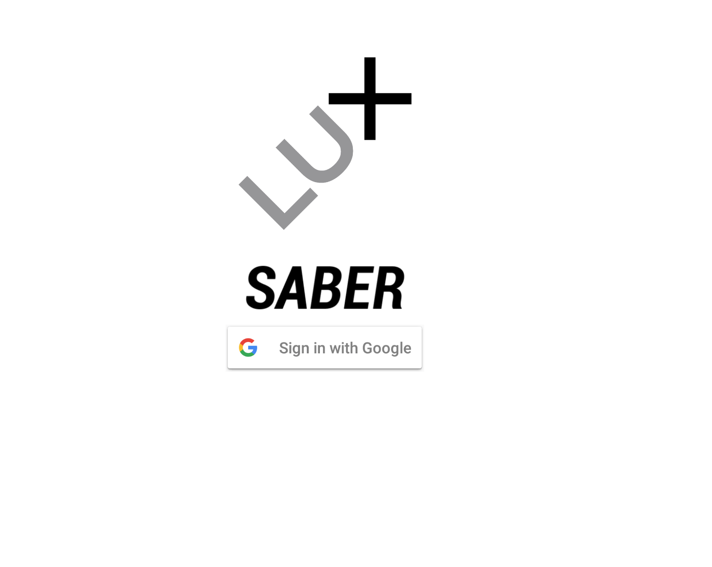

LUX Saber stands out as an advanced funding and investment control platform designed to grant investors a panoramic view of their financial landscape—from meticulous tracking of spending patterns to insightful profit management and identifying promising investment avenues. This isn't just an application for monitoring; it's a digital ally for investors to make informed decisions, predicting and strategizing for their financial future.
Architected on a robust technical scaffold, LUX Saber incorporates NestJS as a Backend, paired with VueJS for the frontend, ensuring a dynamic and user-friendly interface. PostgreSQL serves as the primary database, with Git facilitating smooth version control. However, one of the defining characteristics of this venture was its reliance on Google Sheets for data storage—an untraditional choice spurred by the client's affinity for the platform's accessibility and ease of data manipulation. This choice, albeit unique, introduced challenges, especially concerning the site's responsiveness.
In LUX Saber, I prioritized enhancing security by successfully integrating 'Auth0' for robust authentication and fine-tuned the user experience. A primary challenge arose from the Google Sheets data integration, which resulted in significant lag during data retrieval. Recognizing the benefits of a traditional database for improved speed, I faced resistance from the client due to concerns about development costs. In response, I proactively designed a database schema for a key application module. I then paired it with a GSheet extension for two-way data synchronization. The significant improvement in response time, evident from the side-by-side comparison of both methods, swayed the project towards adopting a conventional database. The incorporation of Retool and GSheet extensions further optimized data flow, ensuring efficiency and a seamless user experience. This endeavor enriched my technical skillset and highlighted the importance of innovative solutions in tackling project challenges.